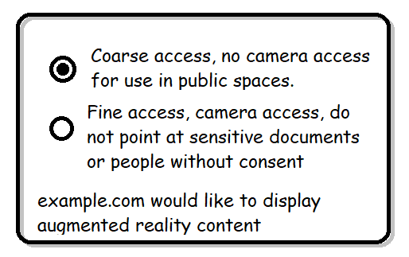

1. Introduction
This specification introduces new WebXR Device API capability, namely Raw Camera Access API. The newly introduced API enables WebXR-powered applications to access camera image pixels, allowing them to leverage this new information to compute custom per-frame visual effects, or take a snapshot of the app-rendered content overlaid with the camera image.
Note: The API shape specified in this document primarily solves the smartphone-centric scenarios. See issue #2 for context.
1.1. Terminology
This document uses the acronyms AR to signify Augmented Reality, and VR to signify Virtual Reality.
2. Initialization
2.1. Feature descriptor
The applications can request that raw camera access be enabled on an XRSession by passing an appropriate feature descriptor. This module introduces new string - camera-access, as a new valid feature descriptor for raw camera access feature.
A device is capable of supporting the raw camera access feature if the device exposes native camera capability. The inline XR device MUST NOT be treated as capable of supporting the raw camera access feature.
The raw camera access feature is subject to permissions policy and requires "xr-spatial-tracking" policy to be allowed on the requesting document’s origin. In addition, the "camera" permissions policy must be allowed on the requesting document’s origin.
const session= await navigator. xr. requestSession( "immersive-ar" , { requiredFeatures: [ "camera-access" ], });
3. Accessing camera texture
3.1. XRView
partial interface XRView { [SameObject ]readonly attribute XRCamera ?; };camera
The XRView is extended to contain a camera attribute which refers to an XRCamera instance containing information about the camera image relevant for this view. When camera attribute is accessed for the first time on a given XRView instance, the user agent MUST run the obtain camera algorithm. Subsequent accesses on the same XRView instance MUST result the same XRCamera instance if one was returned, or null otherwise.
In order to obtain camera for XRView view, the user agent MUST run the following steps:
-
Let session be the view’s session.
-
If camera-access feature descriptor is not contained in the session’s set of granted features, return
nulland abort these steps. -
Let frame be the view’s frame.
-
If frame’s active boolean is
false, throw anInvalidStateErrorand abort these steps. -
If frame’s animationFrame boolean is
false, throw anInvalidStateErrorand abort these steps. -
Let camera image contain a camera image buffer of size width by height texels that was returned from native camera that is valid for frame’s time.
-
If camera image is
null, returnnulland abort these steps. -
Ensure that camera image contains data that is aligned with the view, including adjusting width and height as appropriate. If that is not possible, return
nulland abort these steps. -
Invoke create camera instance algorithm with view, camera image, width and height and return its result.
3.2. XRCamera
[SecureContext ,Exposed =Window ]interface {XRCamera readonly attribute unsigned long ;width readonly attribute unsigned long ; };height
The XRCamera interface is introduced as a way to expose information about the camera texture that can be obtained from XRWebGLBinding.
The XRCamera contains width attribute that contains the width (in texels) of the camera image.
The XRCamera contains height attribute that contains the height (in texels) of the camera image.
Each XRCamera has an associated view instance that contains the XRView from which the XRCamera instance was returned.
Each XRCamera has an associated camera image data buffer.
XRView view, camera image, width and height, the user agent MUST run the following steps:
-
Let result be a new instance of
XRCamerainterface. -
Set result’s view to view.
-
Set result’s camera image to camera image.
-
Set result’s
widthto width. -
Set result’s
heightto height. -
Return result.
3.3. XRWebGLBinding
partial interface XRWebGLBinding {WebGLTexture ?(getCameraImage XRCamera ); };camera
The getCameraImage(camera) method, when invoked, can be used to obtain camera image from an XRWebGLBinding. The returned WebGLTexture, if non-null, is an opaque texture.
XRWebGLBinding binding, for XRCamera camera, the user agent MUST run the following steps:
-
Let session be binding’s session.
-
Let view be camera’s view.
-
If view’s session does not match session, throw an
InvalidStateErrorand abort these steps. -
Let frame be the view’s frame.
-
If frame’s active boolean is
false, throw anInvalidStateErrorand abort these steps. -
If frame’s animationFrame boolean is
false, throw anInvalidStateErrorand abort these steps. -
Let context be the binding’s context.
-
Let camera image be the camera’s camera image.
-
Let result be a
WebGLTexturethat was created on context, containing camera image’s data. result is an opaque texture. -
Return result.
The user agent MAY cache the results of a call to getCameraImage(camera) to be returned for subsequent calls of the method, assuming that the cache is keyed by the binding and the camera instance. The user agent MUST perform initial validations even when using the cache by running up to step 6 (inclusive) of obtain camera image algorithm. Because this caching is permitted, the application SHOULD treat the returned WebGLTexture as read-only.
Note: caching is permitted because the user agent retains ownership of the lifetime of the returned WebGLTexture (since it’s considered an opaque texture), and because calling this method multiple times within the same requestAnimationFrame() callback (ensured by using XRCamera, & therefore XRFrame transitively as a part of the cache key), on the same binding (ensured by using XRWebGLBinding as a part of the cache key), will result in textures with identical contents.
If the WebGLTexture returned from a call to getCameraImage(camera) supports transparency, it MUST contain colors with premultiplied alpha.
Should we specify more information about the returned WebGLTexture? E.g.: is color-renderable, what is the texture format, etc.
4. Native device concepts
4.1. Native camera
Raw camera API specification assumes that the native device on top of which the API is implemented provides a way to access animation-frame-synchronized access to the camera image. Such a device is said to support a native camera capability.
In addition for the device to being able to provide a camera image, the Raw Camera Access API can only provide camera image textures that are aligned with an XRView from which they are requested. The camera image is said to be aligned with the XRView if the camera pose is the same as the XRView’s pose, and the camera’s viewing frustum has the same shape as XRView’s viewing frustum. If the camera image returned by the native camera covers a viewing frustum that entirely contains the XRView’s viewing frustum, the user agent can crop the camera image as long as the operation causes the viewing frustum shapes to match exactly.
5. Privacy & Security Considerations
The Raw Camera Access API has the highest privacy implications out of all currently available WebXR capabilities, in that it is the only API that allows the applications to directly observe the user’s environment. Due to this, the user agents should seek user consent prior to allowing creating sessions with camera-access feature enabled. Refer to WebXR Device API § security & WebXR Device API § user-intention sections for more details, as well as § 5.1 User experience & § 5.2 Privacy indicators sections below.
The requirement that the provided camera images are aligned with the XRViews offers a partial mitigation for impact of the API on users' privacy. A consequence of this requirement is that depending on the XR Compositor’s blend technique, the camera image will contain the same information that the user may already be seeing, thus providing direct feedback about which parts of the environment are visible to the website. Note that in some cases it would be possible for the sites to suppress this information (e.g. on smartphones by rendering an opaque object that would encompass the entire view, thus occluding the environment rendered by the compositor).
In addition to the requirement for the user agents to seek user consent, the application developers are strongly encouraged not to ask for camera-access feature if there are other means of achieving their use cases.
5.1. User experience
As stated above, due to privacy implications of Raw Camera Access API, the user agent should seek user consent prior to creating a session with camera-access feature enabled. This can be achieved in multiple ways, some of which would require interacting with the user directly.
Some examples of interacting with the user directly are:
-
Displaying a permission prompt that allows the user to select how fine-grained information will be exposed to the site. Mock of such prompt can be seen below.

-
Displaying a series of permission prompts that would take into consideration various levels of user consent needed in order to create a session with the requested and optional features provided by the application to
requestSession()call.
It is the intent of this specification to ensure that the user agent does not encourage app developers to ask for camera-access feature if the experience they want to provide does not absolutely require it. Due to privacy implications of the feature, user agents are allowed to introduce additional friction when a site asks for access to the camera images, with the hopes that this would incentivize the applications to not ask for the feature needlessly.
User Agents should consider re-using permissions UI (or permissions granted to the origin already) for the powerful feature "camera".
5.2. Privacy indicators
The user agent MUST display a privacy indicator every time an XRSession with camera-access has been created and has not yet ended. If it ever becomes possible to modify a set of granted features of a session after a session has been created, the indicator SHOULD be displayed for at least as long as the camera-access feature descriptor is contained in the set of granted features of the session.
The indicator displayed to the user should communicate the fact that the device’s camera is in-use and the site has access to it, and thus they should take extra care to ensure that the content that falls within the field of view of the camera is something they are comfortable sharing with the site. This is especially true in a public setting, where bystanders that did not consent to being recorded may be present.
The example indicators consist of (but are not limited to):
-
on a mobile device, displaying a notification in the status bar that the camera is in use;
-
rendering a UI element (e.g. a border around the content, a round icon symbolizing "Record" button, etc.) that suggests that the content is being recorded;
-
using a LED indicator of the recording device (if present and controllable by user agent);
-
emitting a camera shutter sound effect at the start of the session;
6. Acknowledgements
The following individuals have contributed to the design of the WebXR Raw Camera Access specification: